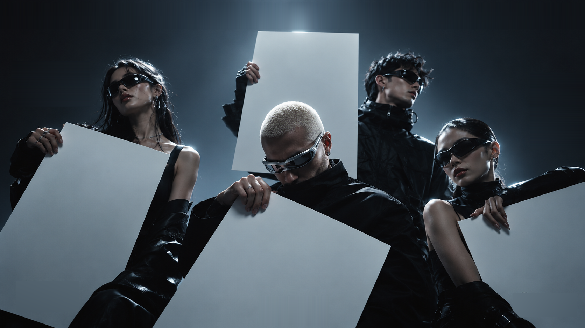

Sensory Brand Codes: Establishing Visual Recall in Sub-Second Attention Spans
Deconstructing how distinctive color contrast, sound frequencies, and typographic tension create instant recognition before conscious cognitive processing.

Photo & Video Production
For brands that move people.
Photography
Film Production
Editing & Post
Color Grading
Art Direction
01 / Editorial Journal
Essays, strategic critiques, and production notes from the studio floor. On distinctiveness, cinematic restraint, and creative economics.
 Lead Essay
Lead Essay
When every algorithm optimizes for the median, polish becomes indistinguishable from wallpaper. Deliberate tension, analog textures, and intentional pacing are the only asymmetric advantages left.
 02
02
A visual identity without a strategic point of view is just expensive styling. How tension creates enduring brand memory.
 03
03
Why cinema-grade creative assets consistently outperform low-effort UGC in scaling customer lifetime value across luxury verticals.
03 / Core Disciplines
From sharp positioning to ideas that travel, we build marketing that makes people stop, pay attention, and take action. No noise. No forgettable campaigns. Just work that moves brands forward.
01 / Strategy & Positioning
Positioning before pixels.
Before a single frame is shot, we define what your brand stands for, who it speaks to, and why it deserves attention. We dive into your audience, analyse competitors, and uncover the market opportunities that others overlook. The goal is to understand not just what people buy, but what makes them choose one brand over another.
Using these insights, we build a strategic foundation that shapes your positioning, messaging, and creative direction. From defining your unique value proposition to developing a distinctive brand voice and visual identity, every element works together to create a consistent and recognisable presence.
We bring clarity to your brand, turn insights into purposeful creative decisions, and build a foundation for lasting relevance and sustainable growth.
What We Do
02 / Cinema & Visuals
Stories that move.
We create content that captures attention, communicates value, and gives people a reason to remember your brand. From cinematic brand films and campaign shoots to product photography and short-form videos, every piece is crafted with a clear creative direction and purpose.
Our process brings together concept development, visual storytelling, professional production, and precise post-production to turn ideas into compelling visual experiences. We focus on the details that make content stand out — thoughtful composition, intentional lighting, strong narratives, and film-quality editing.
Whether it's building brand awareness, showcasing a product, or creating content for social media, we produce visuals that feel distinctive, connect with your audience, and make your brand impossible to overlook.
What We Create

03 / Distribution & Scale
Attention, bought wisely.
Great creative only works when it reaches the right people. We build and manage data-driven advertising campaigns across Meta, Google, and YouTube, combining strategic targeting with creative experimentation to turn attention into measurable business results.
From audience research and campaign planning to ad creation and budget optimisation, every decision is guided by performance. We continuously test new hooks, messaging, and creative formats to understand what resonates, eliminate wasted spend, and scale what works.
We track the metrics that matter — from clicks and conversions to qualified leads and customer acquisition costs — giving you a clear picture of how your marketing investment contributes to business growth.
What We Do

04 / Culture & Engine
Never go quiet.
Brands are built through consistent presence, meaningful conversations, and content that gives people a reason to come back. We build and manage your social media presence with a clear strategy, turning your platforms into active communities where your brand stays relevant and top of mind.
From content planning and creative direction to reels, stories, and community engagement, we make sure every post has a purpose. We study audience behaviour, identify emerging trends, and develop platform-specific content that reflects your brand's personality while keeping your audience engaged.
Beyond posting, we pay attention to what works. By tracking engagement, reach, and audience growth, we continuously refine our approach to strengthen your online presence and turn followers into a community that trusts your brand.
What We Do

05 / Revenue Architecture
Turn attention into revenue.
Clicks don't pay bills — customers do. We design conversion-focused journeys that guide people from their first interaction with your brand to taking meaningful action. From high-converting landing pages and strategic email sequences to compelling offers, every touchpoint is built to reduce friction and move prospects closer to a purchase.
We analyse how users interact with your website, identify where potential customers drop off, and uncover opportunities to improve the experience. Through A/B testing, behavioural insights, and continuous optimisation, we refine each stage of the funnel to improve conversion rates and make better use of your existing traffic.
The result is a more efficient path from discovery to decision — turning marketing spend into measurable business outcomes and helping your brand grow without relying solely on more traffic.
What We Do

04 / Client Proof & Endorsements
Uncompromising creative execution backed by ruthless performance metrics. Explore verified testimonials from founders and market leaders who scaled with ORCHI.
“Orchi rebuilt our creative engine from scratch. In 90 days, acquisition costs dropped 42% while scaling monthly revenue 3.4x.”
“Their cinematic production does not look like tech marketing—it looks like cinema. Series B lead investors cited our launch film directly.”
“The liquid aesthetic and ruthless conversion focus gave our brand an unfair monopoly in a saturated global market.”
05 / Research Dossier & Archive
A curated index of studio research, tactical teardowns, and creative methodologies. Filter by discipline or scan the complete collection.
Deconstructing how distinctive color contrast, sound frequencies, and typographic tension create instant recognition before conscious cognitive processing.
Film stock emulation, controlled highlight roll-offs, and spectral halation techniques that communicate luxury perception without conscious viewer effort.
Bridging the divide between high-craft editorial brand perception and rigorous conversion rate optimisation. Tactics from 48 executed campaigns.
Why reactive trend-chasing burns creative capital. Building serialized, platform-native content formats that compound audience retention over 12 months.
A deep dive into how visionary founders leverage tension, polarizing viewpoints, and editorial precision to transcend commoditized price competition.
05 / Initiate Project
We take on a limited number of brand and production partnerships each quarter to maintain cinema-level craftsmanship. Inquiries are reviewed within 24 hours.